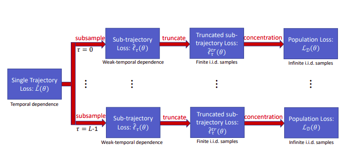
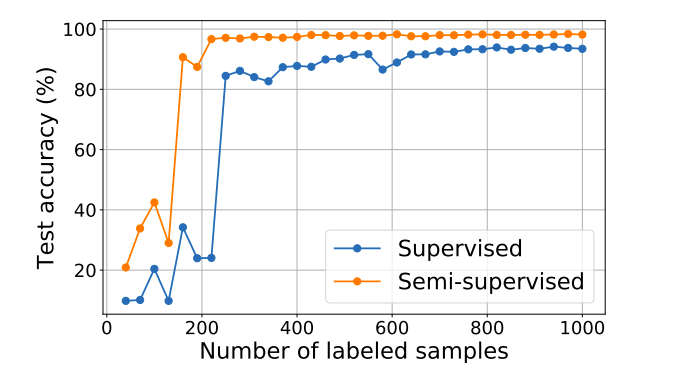
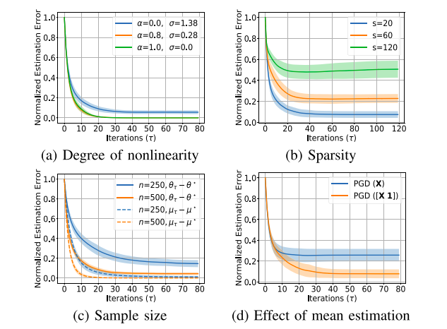
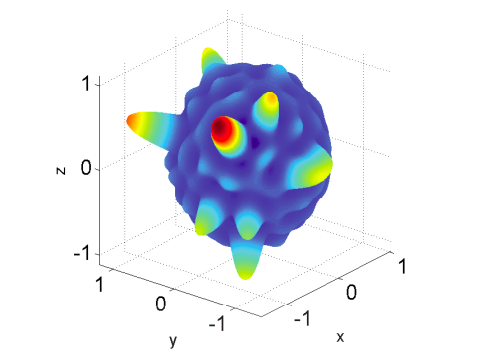
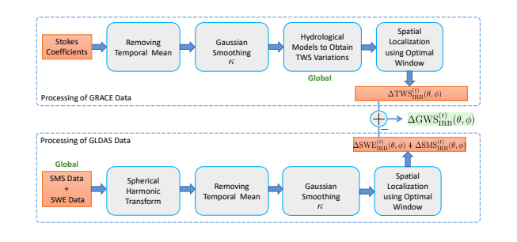

|
My research lies at the confluence of machine learning, optimization, statistics and applied mathematics. Learning and Control of (Nonlinear) Dynamical Systems Recently data-driven control is getting lots of attention both from control and machine learning communities. We contributed to this direction by formulating a general framework for learning nonlinear dynamical systems from finite samples collected from a single trajectory. We provide optimal sample complexity and optimal statistical rates for learning nonlinear dynamical systems. More recently, we have also studied the problem of learning and adaptive control of Markov jump linear systems and Bilinear dynamical systems where the dynamics of the system is governed by multiple state-input matrices.
Convergence of Semi-supervised Learning with Self-training In the past few years, we saw a tremendous success in efficiently using unlabeled data to train deep networks. With only few labeled samples, the sate-of-the-art semi-supervised learning algorithms achieve almost the same accuracy as their supervised counterparts. However, these methods lack theoretical insights. Here we contributed by studying the optimization landscape of semi-supervised training involving pseudo-labels. We give two-stage convergence guarantee and statistical error bounds for the semi-supervised learning involving pseudo-labels.
High Dimensional Estimation We study the problem of finding the best linear model that can minimize least-squares loss given a (finite) dataset in high-dimensions. The population minimizer is assumed to lie on a manifold such as sparse vectors. We show convergence of projected gradient descent to estimate the population minimizer and establish data-dependent estimation error bounds for heavier tailed subexponential distributions besides subgaussian.
Reconstruction of non-bandlimited signals on the Sphere This work involves the accurate and robust reconstruction of non-bandlimited finite rate of innovation signals on the sphere from finite samples. The idea is to efficiently use the annihilating filter method to increase the accuracy and reduce the number of samples required. Our proposed method finds application in cosmology, medical imaging, and wireless sensor networks to name a few.
Estimation of Ground Water Storage Changes in Indus River Basin Using GRACE data The depletion of groundwater level is of critical importance for sustainable groundwater management. In this work, we use Gravity Recovery and Climate Experiment (GRACE) to estimate variations in the terrestrial water storage and use it in conjunction with the Global Land Data Assimilation System (GLDAS) data to extract groundwater variations over time for Indus River basin.
Other Related ProjectsFew-shot reinforcement learning with zeroth-order optimization for Mujoco locomotion tasks. Self- organizing acoustic localization networks (link). |